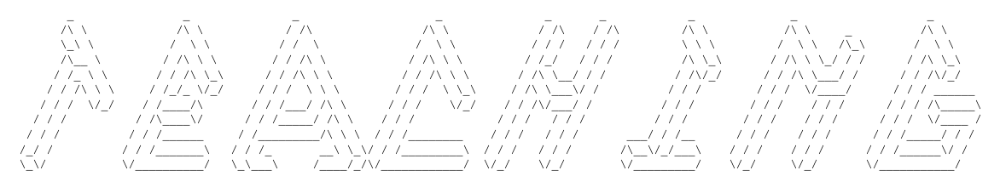

Education should be encouraging, relevant to the students’ lives, intellectually challenging and should be designed to bring out the maximum potential from the students. Each classroom is dynamically different, but incorporating different teaching tools and strategies can engage, motivate and activate students. I always strive to bring my maximum to the classrooms as I believe I owe this to my students and the community.
Courses - Recitations - Laboratories - Experiments
<<<<<<< HEAD Taught several different courses and delivered substitute lectures
for professors at university level at the Department of Physics and Engineering
physics at Stevens Institute of Technology, Hoboken, NJ (USA)
======= Taught several different courses at the Department of Physics and Engineering physics at
Stevens Institute of Technology, Hoboken, NJ USA
>>>>>>> 856b54b92b9a83d03d0f32be5f12790d136ade70
Philosophy
My teaching philosophy includes:- open mindedness
- positive attitude
- equal chances
- high expectations
Education should be encouraging, relevant to the students’ lives, intellectually challenging and should be designed to bring out the maximum potential from the students. Each classroom is dynamically different, but incorporating different teaching tools and strategies can engage, motivate and activate students. I always strive to bring my maximum to the classrooms as I believe I owe this to my students and the community.
Courses - Recitations - Laboratories - Experiments
<<<<<<< HEAD Taught several different courses and delivered substitute lectures
for professors at university level at the Department of Physics and Engineering
physics at Stevens Institute of Technology, Hoboken, NJ (USA)
======= Taught several different courses at the Department of Physics and Engineering physics at
Stevens Institute of Technology, Hoboken, NJ USA
>>>>>>> 856b54b92b9a83d03d0f32be5f12790d136ade70
- Mechanics for engineers
- Laboratory (experiments) for scientists
- General Physics
- Electricity & Magnetism